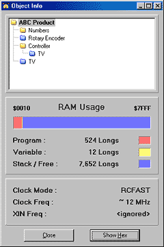
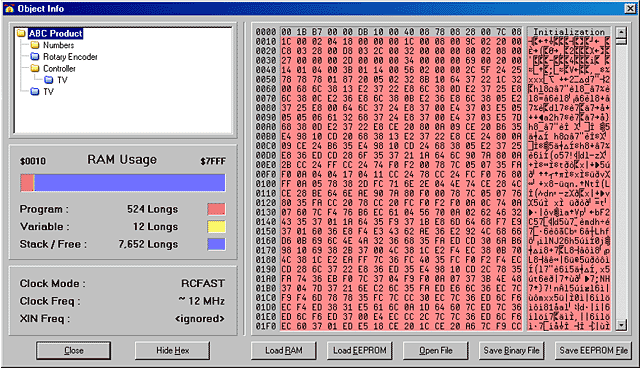

The Object Info form displays details about the project you just compiled successfully using the Compile Current/Top → View Info… function. At the top is an Info Object View very similar to that of the Integrated Explorer’s Object View (see Screen Organization). Below the Info Object View are two panels with summary information.

The Object Info Form
The form is divided into the Info Object View, The RAM Usage Panel, and the Clock Panel.
This example shows details about the “ABC Product” project compilation.
The Info Object View works exactly like the Object View with a few exceptions:
The RAM Usage panel displays statistics about RAM allocation by the object currently selected in the Info Object View. The horizontal bar gives a summary view of the entire RAM with its color legend and numerical details below it. The example above shows that the ABC Product object consumes 524 longs (2096 bytes) for program space and 12 longs (48 bytes) for variable space, leaving over 7k longs (over 30k bytes) free.
The clock panel, under the RAM Usage panel, displays the clock/oscillator settings of the object currently selected in the Info Object View. This example shows that the ABC Product object configured the clock for RCFAST, approximately 12 MHz and no XIN frequency.
The Show/Hide Hex button shows or hides the detailed object hex view, as shown below. The Hex View shows the actual compiled object data, in hexadecimal, that are loaded into the Propeller chip’s RAM/EEPROM upon download.

Hex View open showing the hex values of the ABC Product compilation.
The buttons under the hex display allow for downloading and saving of the currently displayed hex data.
The first two buttons under the hex display, Load RAM and Load EEPROM, perform the same function as the similarly named menu items under the Compile Current/Top menu. It’s important to note that they use the current object (the one selected in the Info Object View) as the source to download. In other words, you can actually select a sub-object from the project and download just that; a practical procedure only if that object were designed to run completely on its own.
The last three buttons, Open File, Save Binary File, and Save EEPROM File, either open a file or save a file to disk. The Open File button opens a previously saved Binary or EEPROM file into the Object Info window. The “save” buttons save the hex data from the currently selected object to a file on disk. Save Binary File saves only the portion actually used by the object; the program data, but not variable or stack/free space. Save EEPROM File saves the entire EEPROM image, including variable and stack/free space. Use Save EEPROM File if you wish to have a file that you can load into an EEPROM programmer for production purposes.
Propeller Help Version 1.2
Copyright © Parallax Inc., dba Parallax Semiconductor
6/17/2011